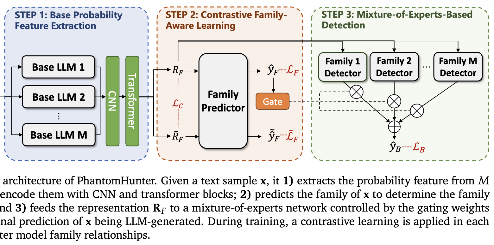

|
Hao Mi 米昊 I am a M.S. student at the Institute of Computing Technology, Chinese Academy of Sciences (ICT, CAS), working in the Media Synthesis and Forensics Lab under the supervision of Prof. Juan Cao and Prof. Qiang Sheng. Prior to this, I received my Bachelor's degree in Computer Science and Technology from Xi'an Jiaotong University (XJTU). My research interests focus on the misinformation and factuality in the era of large language models, which is a critical issue for constructing the reliable and trustworthy LLM-based systems. Currently, I am mainly working on hallucination detection in LLMs. Feel free to reach out for research collaborations on LLM factuality! Contact: mihao24s[AT]ict[dot]ac[dot]cn |
📍 Beijing, China |
{kind=link}
Publications |

|
ACL'26, Oral Logical Consistency as a Bridge: Improving LLM Hallucination
Detection via Label Constraint Modeling between Responses and Self-Judgments
Hao Mi, Qiang Sheng, Shaofei Wang, Beizhe Hu, Yifan Sun, Zhengjia Wang, Hengqi Zeng, Yang Li, Danding Wang, and Juan Cao Proceedings of the 64th Annual Meeting of the Association for Computational Linguistics Paper (TBA) / Preprint / Project Page TL;DR: We leverage the inherent logical consistency between LLM responses and their self-judgments as a bridging signal to improve hallucination detection. |

|
KDD'26 EvoFEND: Dual Memory-Driven Self-Evolving Fake News Detection
Beizhe Hu, Qiang Sheng, Hao Mi, Jiaying Wu, Zhengjia Wang, Yuanlong Yu, Danding Wang, Xuming Hu, and Juan Cao Proceedings of the 32nd ACM SIGKDD Conference on Knowledge Discovery and Data Mining Paper (TBA) TL;DR: We build an agentic framework for fake news detection that can evolve itself by reading social media streams. |
|
 |
Preprint PhantomHunter: Detecting Unseen Privately-Tuned LLM-Generated
Text via Family-Aware Learning
Yuhui Shi, Yehan Yang, Qiang Sheng, Beizhe Hu, Hao Mi, Chaoxi Xu, and Juan Cao Preprint / Media Coverage: Unite.AI TL;DR: We introduce a family-aware learning framework that captures shared traits across base and privately tuned LLMs to robustly detect unseen LLM-generated text. |

|
IJCAI'24 Ten Words Only Still Help: Improving Black-Box AI-Generated Text
Detection via Proxy-Guided Efficient Re-Sampling
Yuhui Shi, Qiang Sheng, Juan Cao, Hao Mi, Beizhe Hu, and Danding Wang Proceedings of the 33rd International Joint Conference on Artificial Intelligence Preprint / Paper / GitHub Repo / Chinese Blog TL;DR: To detect and attribute text generated by black-box LMs, we estimate the generation probabilities of representative tokens using a white-box proxy LM, yielding a discriminative feature. |
Education |
|
2024 – Present M.S. student in Computer Science and Technology University of Chinese Academy of Sciences (Cultivation Unit: Institute of Computing Technology, CAS) |
|
2020 – 2024 B.E. in Computer Science and Technology Qian Xuesen Honors College, Xi'an Jiaotong University |
Honors and Awards |
|
Miscellaneous |
| Just for fun: photography📷, biking🚴, cooking🍳, puzzle games💭, sneakers👟... |
| 📚 Hallucination Reading List |
|
Website template from Jon Barron and Qiang Sheng. |